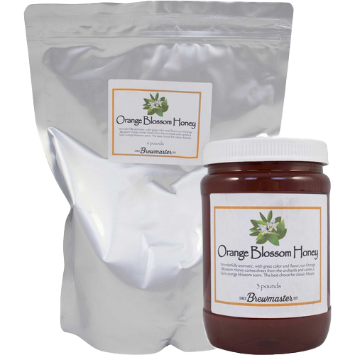
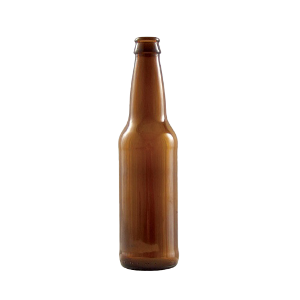
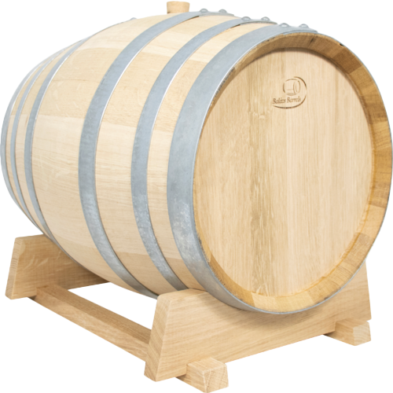

🌾 Fermentables & Raw Ingredients

Viking Malt
2.1-3.2 °L - Viking Malt, malty, sweet and nutty notes. Made from 2-row spring barley. Ideal malt for ales and special lagers. Suitable for subtle color correction of regular lagers.

CaraRed
16 - 23 L - CaraRed® is a drum-roasted caramel malt derived from 2-row barley. This caramel malt helps create a full body and provides a deep red color. Notes of caramel, honey and biscuit. Can be up to 25% of total grist.

CaraMunich
31-38 °L - CaraMunich® is a drum-roasted caramel malt derived from 2-row barley. This caramel malt helps create a full body and provides dark amber to copper hues. Notes of caramel and biscuit. Can be up to 10% of total grist.

Black Roasted Barley Malt
407 °L - Briess Malting - Contributes color and rich, sharp flavor characteristic of Stouts and some Porters. Impacts foam color.

Chocolate Malt
350 L - Rich roasted coffee, cocoa — Brown hues; use in all styles for color. Great for the production of most dark beers, especially porters.
🌿 Herbs, Preservatives & Botanicals

Hallertau Mittelfruh Pellet Hops
All hops are packaged in oxygen, light and moisture barrier bags. They are purged with nitrogen and stored cold to optimize freshness. Resealable packages feature a tear notch and zipper.

Lemondrop™ Pellet Hops
The name truly says it all. Lemondrop™ offers a "unique lemon-citrus character with a pleasant aroma." The bright citrus and subtle herbaceous notes are perfect for sessionable beers. While ales tend to bring out her sweeter side, Lemondrop™ is delicate and refined enough for quality lagers. 5%-7% typical Alpha Acid content.

British Bittersweet Apple Cider Concentrate
Made from traditional UK Cider Apples. High in tannins and acidity. Blend or backsweeten with standard apple juice to balance. Dilute in 6 parts water to 1 part concentrate to reconstitute original juice; Approx 1.040 SG, 5.2% ABV.

Orange Blossom Honey
Our Orange Blossom honey should be used for your very best creations. It comes directly from orange tree orchards in America and has the unmistakable floral aroma of orange blossoms. By far, one of our favorite honey for meads. Please note: Honey that gets cold often becomes crystalized but this has no detrimental effect on the overall quality. It can still be used in its crystalized form or returned to liquid by gently heating it back up in a warm water bath.
🏺 Fermentation Vessels & Storage

Italian Glass Carboy Fermenter Narrow Mouth 22.7L 6 Gallon
6 gallon Italian glass carboy. Takes a #7 rubber stopper. Packed individually in cardboard boxes. Shipping details: Pallet quantity: 48 Ship 12 per layer on 48" x 40" pallet, 4 layers high Dimensions: 21" x 11" Weight: 14.0 pounds each Country of origin: Italy SHIPPING NOTE: Not guaranteed on parcel carriers. Due to the fragile nature of the product it is not guaranteed when shipped via parcel carriers (UPS, FedEx, or USPS). Orders can be shipped without the guarantee at the customers own risk. Shipping is guaranteed when shipped on a LTL/Truck carrier. Item # FE328 Availability 423 In Stock Weight 19 LBS

Beer Bottles Traditional Longneck Amber Glass Bottles 12 oz Case of 24
12oz, longneck style brown glass bottles. Case of 24. Packed in corrugated boxes with dividers. Bottle Specifications: Capacity: 12 fl Oz Weight: 0.425 lb Height: 9 inches Outside Diameter: 2.4 inches Pressure Rating: Up to 3 volumes of carbonation. SHIPPING DETAILS: Case: 24 Bottles Pallet Layer: 12 Cases Full Pallet: 48 Cases Box dimensions: 15-3/8" L x 10-1/8" W x 9-3/8" H Country of origin: USA SHIPPING RESTRICTION: Not guaranteed on parcel carriers. Due to the fragile nature of the product it is not guaranteed when shipped via parcel carriers (UPS, FedEx, or USPS). Orders can be shipped without the guarantee at the customers own risk. Shipping is guaranteed when shipped on a LTL/Truck carrier.

Speidel Plastic Fermenter Round HDPE Storage Tank 20L 5.3 gal
Heavy-duty HDPE plastic fermentation and stoarge tank Made from food-safe materials with extra thick walls to preserve the aroma of your beverage Rotating plastic spigot eliminates the need to use an auto-siphon or racking arm to transfer liquid Wide top port opening for easy cleaning Airlock & stopper included Made in Germany by Speidel The future is here today, and the future is HDPE Fermentation & Storage Tanks from Speidel. Made in Germany from nothing but undyed and food-safe plastic, these tanks are produced with particularly thick walls which preserves the aroma and the alcohol for a markedly long time. The stable carrying handles have been tried and tested for decades and are extremely durable. Are you tired of carboys? Hate siphoning to transfer? Wish you could ferment larger batches in a single container? Sick of lifting 50lbs by a small metal handle? Done with worrying about shattered glass, injury and lost product? Well then have we got the solution for you! These heavy duty plastic tanks offer a fantastic fermentation & storage solution at a great price. Key Features: Heavy duty HDPE construction is durable and resists oxygen transfer. None of the risks of working with glass. Small footprint makes them easy to store - take better advantage of the space you have to dedicate to wine & beer making. Built-in handles make these tanks easy to move, even when full. Large lid opening makes them easy to clean by hand - say goodbye to your carboy brush! All ports seal with gaskets and the vessel can be fully sealed for long-term storage. Includes a spigot and oversized 2-piece Speidel airlock. Designed and manufactured in Germany by Speidel, the makers of our legendary commercial wine tanks Suggested Applications: 12L: Perfect for storing small lots, making experimental batches and taking some of your beer or wine along with you to your next party. 20L: Ideal for secondary fermentation and storage of 5 gallon batches. 30L: The vessel for fermenting wine kits and 5 gallon batches of beer with plenty of headspace and no need for a blowoff tube. 60L: Perfect for fermenting larger batches of wine or 10 gallon batches of beer in a single container! Only 4" larger in diameter than a 6.5 gallon carboy! 120L: Ferment & Store large batches of anything - your creativity is the only limit! Approximate Dimensions: 12 in. Diameter x 16.5 in. Height (w/out airlock in place). Mouth is 4.75 in. wide. Note - The maximum temperature that these plastic fermenters can handle is 140F. FAQ: Can filled containers be carried by the handles? Depending on the weight—barrels up to 30L are no problem—60L is the limit and should not be carried when completely full. The handles have a weight capacity of 30kg (66 lbs). Is there an upper limit on the alcohol content of the stored liquid? In principle, there is not. However, it should be noted that the higher the alcohol content, the faster the seals and, to a lesser extent, the tank itself will wear out. Up to what temperature can the containers be used? For short periods of time the containers can withstand temperatures of up to 80°C (176°F). This temperature should not be exceeded. For longer periods of time the containers can be used at temperatures up to 60°C (140°F). Item # FE710 Availability 38 In Stock Weight 4 LBS

Balazs Hungarian Oak Barrel Mild Toast 20L 5.28 gal
Made from high-quality Slavonian oak sustainably sourced from Hungarian forests Superior in long term storage due to the tight grain and slow release of phenolic compounds Equivalent or superior quality compared to French Oak barrels at a much more affordable cost Zinc-plated steel barrel hoops for corrosion resistance Coopered by the world-renowned Balazs Nagy Balazs barrels is a long-trusted brand of Hungarian oak barrels coopered by the famous Balazs Nagy. These barrels are equal or better in quality to French Oak barrels but available at a fraction of the cost of their more famous counterparts. Renowned for respecting fruit, Hungarian barrels offer winemakers a great option to impact the mouthfeel, structure and flavor of wine without stepping on the terroir of your grapes. Due to the tight grain and slow release of phenolic compounds, you can feel secure storing your wine in Hungarian barrels longer than you can with other barrels. The slow process of micro oxygenation rounds the wine while various compounds in the wood such hemicellulose, lipids, and lignins are slowly integrated. As most barrel makers know, the best source of wood for wine barrels is the oak grown in the territory of old-time Hungary, known as Slavonian oak. This rare, high-quality oak can be found in the Zemplén Mountains and in the Tokaj oak woods. The specific type of oak in those territories, and what is used in Balazs barrels, is the Quercus Petrea. This oak is characterised by a dense, hard structure combined with extra flavor. Forestry workers look after these forests with considerable expertise, and the forest density ratio in Hungary is 20–24%, with selective logging taking place between November and April. Once the wood is sourced, it is air dried and aged for 24-28 months before cooperage. Balázs Barrels is establishing a direct cooperation with the forestry workers, ensuring the continuous supply of the best quality oak, allowing them to source and work with the most excellent oak for wine barrel manufacturing from the foremost Hungarian forests. 20 L (5.28 gal) Height - 16.92" Head Diameter - 10.23" Abdomen Diameter - 12.79" Stave Thickness - 0.66 - 0.86" Bung Hole - 26 mm Empty Weight - 17.6 lbs Mild Toast Barrel hoops made from zinc-plated steel for corrosion resistance Rack included
🛠️ Hearth & Brew Day Gear

The Inspector’s Gravity Float
A weighted glass tool used to measure the density and sugar content of the liquid. Necessary for calculating final proof.
Heavy Stirring Oar
Long, solid steel paddle to constantly keep thick honeys and heavy extracts moving so they do not burn on the iron bottom.
Gas-Release Trapping Valve
A simple water-trap mechanism. Allows the natural pressure of fermenting gas to safely vent while blocking sour air and flies.
Scrubbing Bristles & Wire Scourers
Long, flexible wire brushes designed to curve inside the necks of glass jugs to scrape away dried yeast cake and mold.